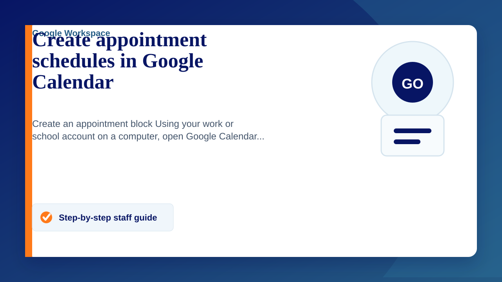

Create an appointment block
- Using your work or school account on a computer, open Google Calendar.
- Make sure that you're in Week view or any Day view.
- Click anywhere in the calendar. In the event box that pops up, click Appointment slots.
- Enter the details, including a title, and pick the calendar where you want the event to show up.
- To add more information, like a location or description, click More options.
Tip: If you want to make the appointment block repeat, do so before you invite others to reserve a slot. When you make an existing appointment block with reserved slots repeat, the reserved slots get duplicated as new slots and double booking can occur. Learn how to make events repeat.
Add guests to the appointment block
When you add a guest to the appointment block, the guest gets added to every appointment slot in the block and receives an email each time someone reserves an appointment. For example, a professor might add her assistant as a guest to be present during office hours.
- To add guests to an appointment block, open the appointment event and click Add guests.
Tip: Don’t add people who want to reserve an individual appointment slot. Instead, send them a link to the appointments page.
Invite others to reserve an appointment slot
After you've set up the appointment block, you can invite people to reserve a slot with a link to your appointments page.
- Open Google Calendar.
- Click your appointment and then Go to appointment page for this calendar.
- Copy and paste the appointment page link from your browser.
- Send this link to people who want to reserve an appointment slot.
Tip: People can reserve your appointment slots with Google Calendar. If necessary, they can create a Google Account to get started.